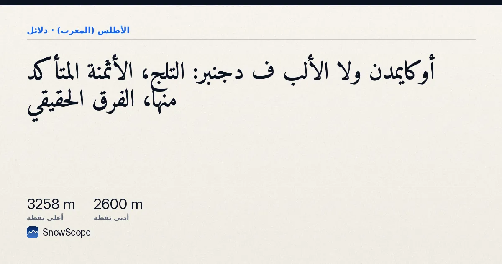
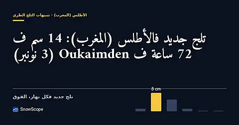
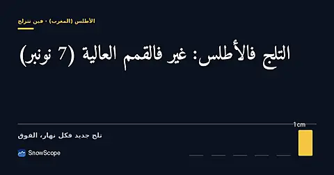

أوكايمدن ولا الألب ف دجنبر: التلج، الأثمنة المتأكد منها، الفرق الحقيقي
يوم 15 ديسمبر عادي، Oukaïmeden كتقف فـ 16 سم ديال التلج فالوسط بينما Val Thorens توصل 89 سم و Chamonix 65 سم. ما لقينا تاريف رسمي أونلاين لـ Oukaïmeden، بحال ما قارنا اللي قدرنا نتأكدو منو: 46 شتوة ديال التاريخ ديال التلج والديار الحقيقيين ديال المصاعد من الألب.
شوف توقعات التلج مباشرة ديال Oukaïmeden فالتطبيق ديال SnowScopeالعلو ديال التلج، التنبيهات والخريطة 3D، فابور.
العلو ديال التلج بداية ديسمبر فثلاثة جبال
يوم 15 ديسمبر فشتوة عادية، الحكاية كتبدل بزاف معا الارتفاع والجهة. البيستات ديال الوسط ديال Oukaïmeden (2929 م) فيهم غير 16 سم، واحد ما من تسعة شتوات توصل 50 سم. البيستات ديال الوسط ديال Val Thorens (2498 م)، أقل من Oukaïmeden، فيهم 89 سم واحدة من اثنين ديال الشتوات فيهم 50 سم ولا أكثر. البيستات ديال الوسط ديال Grands Montets ديال Chamonix (2001 م)، أقل بزاف، فيهم 65 سم فديسمبر العادي.
الارتفاعات كاين كتقول الحكاية. فالقمة ديال Val Thorens (3175 م) كتلقا 159 سم يوم 15 ديسمبر. فالقمة ديال Chamonix (2768 م)، 157 سم. القمة ديال Oukaïmeden (3258 م) توصل 17 سم. الأطلس كتاخد تقطيرة أقل فديسمبر؛ الألب كتواجهو البوارح ديال المحيط الأطلسي ويستفيدو من البيستات ديالهم اللي ارتفاعهم مرتفع. بالنسبة للي كيسكيهو فديسمبر، الألب كتعطيهم تغطية أكثر أمان.

شنو معنى فرص التغطية الحسنة بحقيقة
يوم 15 ديسمبر، أربع من خمسة شتوات ديال Val Thorens فيهم 50 سم ولا أكثر. فـ Chamonix، تلاتة من خمسة. فـ Oukaïmeden، واحد من تسعة. هاد الحاجة مهمة بالا رتبت أسبوع مقدما: الألب كتقرب كتوليكم التلج اللي تقدرو تسكيهو بداية الشهر؛ الأطلس ما. الفرق كيبقا يكبر بحال ما رجحنا ليل الكريسماس. يوم 25 ديسمبر، 93 ف المية من الشتوات ديال Val Thorens فيهم أكثر من 50 سم، ضد غير 13 ف المية ديال Oukaïmeden فالوسط.
الديار ديال المصاعد: اللي قدرنا نتأكدو منو
Val Thorens كتعطي وضوح. الديار ديال اليوم الكامل لشخص الكبير ديال Les 3 Vallées كتقف فـ 75,70 يورو من 5 ديال 18 ديسمبر 2026 (الموسم اللي ما فيش ناس)، بعدين 84,20 يورو من 19 ديسمبر. الديار ديال Mont-Blanc Unlimited ديال Chamonix كتراوح من 75 لـ 104 يورو بكل يوم بين 28 نونبر و 18 ديسمبر، والديار كيبقا يعلي كل أسبوع.
Oukaïmeden ما فيه التاريف الرسمي أونلاين لـ 13 نونبر 2026. الديار والجاهات ديال الكراي كتتفاوضو فالمكان. ما منشرناش ديار بحال ما خمنا. بالنسبة لسكان أوروبا، عدم التأكد من الديار كيزيد من خطر الحجز.
فين تكون الاقتصاديات الحقيقية
بالا سكنتي فمراكش، Oukaïmeden كيبقا 50 كم: ما طيارة، ما أسبوع ديال الكراي، ما فندق بعيد من الدار. بالنسبة لشخص محليين، هاد الحاجة ميزة حقيقية. بالنسبة لأوروبي، الطيارة لـ المغرب كتبدل الطيارة لـ فرنسا، وكتقف بحال ما كاتقف. الديار ديال المصاعد ما هي المهمة بحال ما كاتقف فرص التلج: بالا ديتي 75 يورو بـ 89 سم هاد أحسن ديار من بلا حاجة بـ 16 سم وتلقا الصخور.
شنو كيكون Oukaïmeden منطقي
ديسمبر ما هو البداية ديال دورة الأطلس. فبراير ومارس هوما الشهور اللي فيهم أكثر شي: البيستات ديال الوسط كتقف فـ 44 سم ففبراير و 53 سم فمارس، واحد من اثنين ديال الشتوات فيهم 50 سم ولا أكثر. الرحلة ديال ديسمبر كتقف احسن بحال ما كانت خرجة سريعة من مراكش بعد ما كيهبط التلج الطري، ما هي حجز سنة مقدما. بالضد من هاد، الألب كتحمي سكات ديسمبر ديالهم بفضل العلو المتوسط اللي تقدرو يعتمدو عليه ومن القمم ديالهم اللي ارتفاعهم مرتفع.
نصايح للي كيتزلجو
- الألب قبل 19 ديسمبر: حجز الديار ديال الموسم اللي ما فيش ناس ديال Les 3 Vallées فـ Val Thorens بحال ما تكون متأكد من التلج ديال الوسط 89 سم عادي.
- Chamonix: الديار كيعليو طول ديسمبر؛ حجز بالبداية بـ الديار ديال 75 يورو ديال بداية الموسم بالا تقدرتي تلتزمتي ديال التواريخ قبل 18 ديسمبر.
- Oukaïmeden: شوفها خرجة سريعة من مراكش بعد ما كيهبط التلج الطري، ما هي حجز لسنة كاملة. جول الديار ديال المصاعد بالوصول.
- بالنسبة لأسبوع السكي ديسمبر بالنسبة لأوروبي، الألب كتعطي فرص أحسن من الأطلس. برمج Oukaïmeden بـ فبراير ولا مارس بالضد من هاد.
- شوف الخريطة ديال التلج ديال SnowScope الأسبوع اللي قبل بلي تسافري؛ الحالات كتتبدل أكثر شي فالأطلس ولا الألب.
على هاد الأرقام
العلو ديال التلج فالمحطات هو أكثر تلج فالجهة الفوقانية فالتاريخ المكتوب؛ هادو تقديرات لمنطقة، ماشي قياس فنقطة وحدة. التوقعات يمكن تتبدل. ديما شوف النشرة الرسمية ديال الانهيارات قبل ما تخرج من البيست.
كيفاش تستاشهد بهاد المقال
للبحث، التعليم ولا الصحافة: الأرقام والرسومات تقدر تعاود تخدم بيهم بحرية تحت CC BY 4.0 مع هاد الاستشهاد.
SnowScope (2026), أوكايمدن ولا الألب ف دجنبر: التلج، الأثمنة المتأكد منها، الفرق الحقيقي, https://snowscope.app/blog/ar/2026/11/oukaimeden-ou-alpes-week-end-ski-decembre-prix.html, تشاف ف 2026-11-14
SnowScope (Atlas Labs). (2026, November 14). أوكايمدن ولا الألب ف دجنبر: التلج، الأثمنة المتأكد منها، الفرق الحقيقي. SnowScope snow reports. https://snowscope.app/blog/ar/2026/11/oukaimeden-ou-alpes-week-end-ski-decembre-prix.html
BibTeX
@misc{snowscope2026oukaimedenoualpesweekend,
author = {{SnowScope (Atlas Labs)}},
title = {أوكايمدن ولا الألب ف دجنبر: التلج، الأثمنة المتأكد منها، الفرق الحقيقي},
year = {2026},
month = nov,
howpublished = {\url{https://snowscope.app/blog/ar/2026/11/oukaimeden-ou-alpes-week-end-ski-decembre-prix.html}},
note = {Published 2026-11-14 13:29 UTC; accessed 2026-11-14}
}· CC BY 4.0 · الطريقة، الداتا والأدوات →
Oukaïmeden: التلج والحرارة حسب العلو، هاد الشتا مقارنة مع اللي فاتت (الأدوات) →
تابع Oukaïmeden
فابور: ميساج ملي يجي التلج، والتوقعات كل صباح.
تقارير أخرى ديال التلج

كناش عملي على Oukaïmeden فالأطلس الكبير: إمتى كيجي التلج غالبا، شحال، أشمن جهات تختار وكيفاش توصل من مراكش.

Oukaimden طاح فيها 14 سم ديال تلج جديد ف 72 ساعة اللي فاتو، منهم 5 سم ف 24 ساعة اللي فاتو. دابا فيها تقريبا 3 سم فالجهة الفوقانية، حسب الموديل ديال …

محطات الأطلس ديال التزلج ماعندهومش تلج اليوم. غير 80 كم² من الأرض البيضاء باقية على الذروات العالية، والعمق الأعظم فيهم هو 9 سم. البيانات من 7 نونبر.